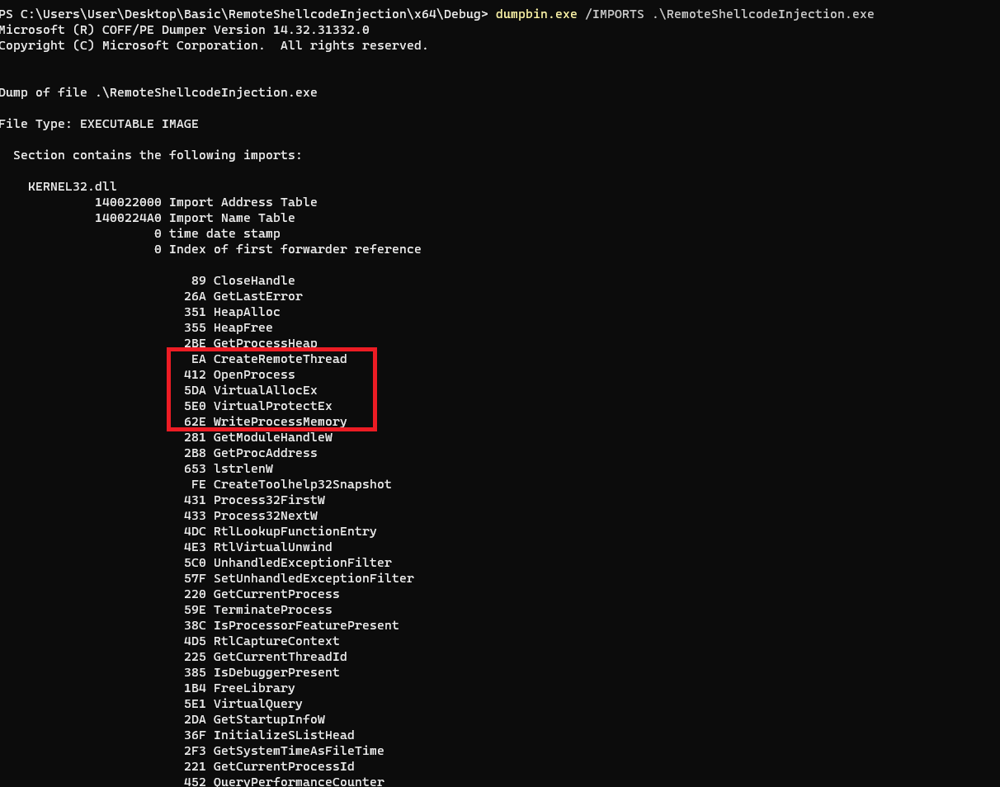

Introduction
The Import Address Table (IAT) contains information regarding a PE file, such as the functions used and the DLLs exporting them. This type of information can be used to signature and detect the binary.
For example, the image below shows the import address table of the binary from the Process Injection - Shellcode module. The PE file imports functions which are considered highly suspicious. Security solutions can then use this information to flag the implementation.

Note that the majority of the remaining functions were added by the compiler and will be dealt with in future modules.
IAT Hiding & Obfuscation - Method 1
To hide functions from the IAT, it's possible to use GetProcAddress, GetModuleHandle or LoadLibrary to load these functions dynamically during runtime. The snippet below will load VirtualAllocEx dynamically and therefore it will not appear in the IAT when inspected.
typedef LPVOID (WINAPI* fnVirtualAllocEx)(HANDLE hProcess, LPVOID lpAddress, SIZE_T dwSize, DWORD flAllocationType, DWORD flProtect);
//...
fnVirtualAllocEx pVirtualAllocEx = GetProcAddress(GetModuleHandleA("KERNEL32.DLL"), "VirtualAllocEx");
pVirtualAllocEx(...);Although this may appear to be an elegant solution, it's not a very good one for several reasons:
VirtualAllocEx string exists in the binary which can be used to detect the usage of the function.GetProcAddress and GetModuleHandleA will appear in the IAT, which in itself is used as a signature.IAT Hiding & Obfuscation - Method 2
A more elegant solution is to create custom functions that perform the same actions as GetProcAddress and GetModuleHandle WinAPIs. This way, it becomes possible to dynamically load functions without having these two functions appear in the IAT. The next modules will discuss this solution more in depth.